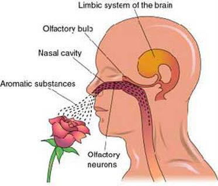

Ez egy elég hosszú hangvételű írás, remélem találsz rá alkalmat, hogy elolvasd, hogy megértsd!
Az esszenciális olajok nagyon koncentrált, természetes anyagok – százszor koncentráltabbak, mint azon gyógynövények, amelyekből desztillációval előállítják őket. Emiatt fontos, hogy bizonyos esszenciális olajokat terápiás használat előtt hígítsuk. Más esszenciális olajok, ezzel szemben olyan könnyűek, hogy nem szükséges őket hígítani, hacsak nem kisgyermekekről vagy csecsemőkről van szó.
"Az illóolajok tömény, lipofil (zsírban oldódó) és általában vízzel nem keveredő (hidrofób) folyadékok, amelyek illékony vegyületeket tartalmaznak, és növényekből vonják ki őket. Az illóolajokat definíció szerint desztillációval vagyis lepárlással (víz-, vízgőz-, vagy gőzlepárlás), hidegen sajtolással állítják elő. Félreértelmezhetően gyakran az oldószeres extrakciót is az illóolajok kivonásaként tüntetik fel, azzal a növények, elsősorban a finom növényi alkatrészek (pl. virágok) illékony komponenseit vonják ki, amelynek a végeredménye a konkrét illetve annak a tisztított változata az abszolút tinktúra." Forrás: Wikipédia
Az illóolajok használata évszázados hagyománnyal rendelkezik. Az ember az idők kezdete óta felhasznált növényeket szervezete működésének támogatására. Az illóolajok a növényekben fellelhető élő folyadékok, amik a növények természetes immunrendszereként működnek.
A jelenleg elérhető illóolajok tárháza széles, de nagy a különbség közöttük, ezért mindig jól válogasd meg, amit haza viszel! A Young Living a legjobb minőségű éterikus olajokat és olajkeverékeket kínálja.
Terápiás célra a piacon kapható olajok 1%-a alkalmas!
Közel 30 % szintetikus, laboratóriumi körülmények között előállított vagy kezelt és nagyon sok a hamisítvány!
A törvények értelmében az aromaterápiás olaj címkéjén szerepeltethető a “100%-ban természetes” kifejezés még akkor is, ha csak 7% valódi esszenciális olajat tartalmaz!
Az éterikus olajokat, ha belélegezzük, közvetlenül az agy érzékelő központjába, azaz a limbikus rendszerbe jut a belélegzett aroma, ahol neurokémiai vegyületté alakul és fejti ki a hatását attól függően, hogy milyen aromáról van szó (blokkoldó, pihentető, stresszoldó, hormonrendszer szabályozó stb.).
A terápiás minőségű olaj semmilyen kémiai adalékot nem tartalmaz, könnyen átjut a vér-agy gáton, a sejtfalunkat is képes áttörni. A szintetikus illatok vegyületei viszont RÁTELEPSZENEK a sejtfalra. Ezeket a szitetikumokat a szervezet toxinokként ismeri fel és a máj nem képes azok feldolgozására. A sok szintetikum hatására (is) előkerülnek allergiák, immunbetegségek, ösztogéndominancia. Megszabadulni mindezektől feladat!
Mindig arra kell törekedni, hogy a testet teljesen természetes anyagokkal lássuk el a mindennapok során. Én is igyekszem így cselekedni mind a magam és a környezetemben is!
Az emberi testben 100 trillió sejt található és egyetlen csepp olaj akár 40 000 molekulával képes minden egyes sejtet befedni. A Young Living terápiás olajokból, – 1-2 csepp elegendő, nagyon sokáig tudod használni rendkívül sokféle képen és dologra.

Az öt alapvető alkalmazási mód: helyi, inhaláció, belsőleg, szájban történő és visszatartott alkalmazás.
Copyright © All rights reserved | This template is made with by Colorlib